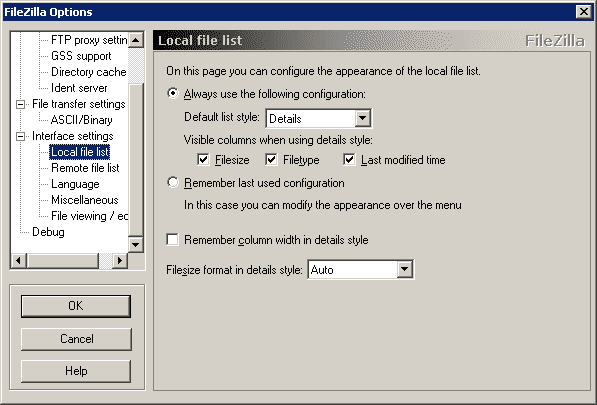

Local file list
Overview:
This page configures the appearance of the local file list.

Always use the following configurationn
When selected, the selected layout is used for the local file list.
Default list style
Chose from one of the following styles for the local file list:
Details - List of files with full details, this is the default style List - Lists only the file names and shows their icons, list get's extended horizontally if it is larger as the list window Large Icons - Large list of icons with the file name below. Small Icons - Lists only the file names and shows their icons, list get's extended vertically if it is larger as the list window Visible columns when using details style
Specifies which colomns will be visible when in details style. Useful if you do not wish to display all details.
show statusbar with information about (selected) files
If enabled, FileZilla displays a statusbar with information about the selected files and folders. If no files are selected, the information about all files is shown.
Remember last used configuration
When selected, FileZilla remembers the layout of the local file list when closed and restores it when started the next time.
Remember column width in details style
If enabled, FileZilla remembers the width of the columns in the local file list in details style.
Filesize format in details style
Specifies how the filesize will be displayed. Filesizes can either be displayed in bytes, KB and MB. In Auto mode, FileZilla keeps the length of the filesize small, displaying a large file in bytes would result in a larg string so FileZilla uses KB or MB in this case.